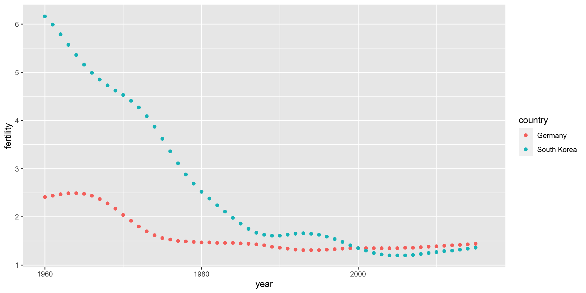
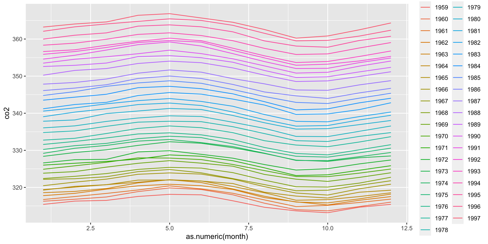

country year fertility
1 Germany 1960 2.41
2 South Korea 1960 6.16
3 Germany 1961 2.44
4 South Korea 1961 5.99
5 Germany 1962 2.47
6 South Korea 1962 5.79
Plotting tidy data is simple with ggplot2
tidy_data %>%ggplot(aes(year, fertility, color = country)) +geom_point()

Example of wide data
# import and inspect example of original Gapminder data in wide formatpath <-system.file("extdata", package="dslabs")filename <-file.path(path, "fertility-two-countries-example.csv")wide_data <-read_csv(filename)wide_data %>%select(country, `1960`:`1967`)
# compare the class from our original tidy data (year is an integer) and in the new version (year is a character)class(tidy_data$year)
[1] "integer"
class(new_tidy_data$year)
[1] "character"
pivot_longer() in action
# use the names_transform argument to change the class of the year values to numericnew_tidy_data <- wide_data %>%pivot_longer(-country, names_to ="year", values_to ="fertility", names_transform =list(year=as.numeric))
pivot_wider()
The pivot_wider() function converts tidy data into wide data
The data frame to be reshaped is the first argument in pivot_wider()
The argument names_from tells pivot_wider() which variable will be used for the column names, values_from which variable to use to fill in the values.
pivot_wider() in action
# convert the tidy data to wide datanew_wide_data <- new_tidy_data %>%pivot_wider(names_from = year, values_from = fertility)select(new_wide_data, country, `1960`:`1967`)
co2_tidy %>%ggplot(aes(as.numeric(month), co2, color = year)) +geom_line()

separate()
splits one column into two or more columns at a specified character
takes three parameters: the name of the column to be separated, the names to be used for the new columns, and the character that separates the variables.
use extra = "merge" to merge rest in case of additional separation
# separate on underscoresdat %>%separate(name, c("year", "name"), sep ="_")
# A tibble: 224 × 4
country year name value
<chr> <chr> <chr> <dbl>
1 Germany 1960 fertility 2.41
2 Germany 1960 life 69.3
3 Germany 1961 fertility 2.44
4 Germany 1961 life 69.8
5 Germany 1962 fertility 2.47
6 Germany 1962 life 70.0
7 Germany 1963 fertility 2.49
8 Germany 1963 life 70.1
9 Germany 1964 fertility 2.49
10 Germany 1964 life 70.7
# … with 214 more rows
separate() in action
# separate on underscores (the default), convert years to numericdat %>%separate(name, c("year", "name"), convert =TRUE)
# A tibble: 224 × 4
country year name value
<chr> <int> <chr> <dbl>
1 Germany 1960 fertility 2.41
2 Germany 1960 life 69.3
3 Germany 1961 fertility 2.44
4 Germany 1961 life 69.8
5 Germany 1962 fertility 2.47
6 Germany 1962 life 70.0
7 Germany 1963 fertility 2.49
8 Germany 1963 life 70.1
9 Germany 1964 fertility 2.49
10 Germany 1964 life 70.7
# … with 214 more rows
separate() in action
# separate on underscores# split on all underscores, pad empty cells with NAdat %>%separate(name, c("year", "name_1", "name_2"), fill ="right", convert =TRUE)
# A tibble: 224 × 5
country year name_1 name_2 value
<chr> <int> <chr> <chr> <dbl>
1 Germany 1960 fertility <NA> 2.41
2 Germany 1960 life expectancy 69.3
3 Germany 1961 fertility <NA> 2.44
4 Germany 1961 life expectancy 69.8
5 Germany 1962 fertility <NA> 2.47
6 Germany 1962 life expectancy 70.0
7 Germany 1963 fertility <NA> 2.49
8 Germany 1963 life expectancy 70.1
9 Germany 1964 fertility <NA> 2.49
10 Germany 1964 life expectancy 70.7
# … with 214 more rows
separate() in action
# split on first underscore but keep life_expectancy mergeddat %>%separate(name, c("year", "name"), sep ="_", extra ="merge", convert =TRUE)
# A tibble: 224 × 4
country year name value
<chr> <int> <chr> <dbl>
1 Germany 1960 fertility 2.41
2 Germany 1960 life_expectancy 69.3
3 Germany 1961 fertility 2.44
4 Germany 1961 life_expectancy 69.8
5 Germany 1962 fertility 2.47
6 Germany 1962 life_expectancy 70.0
7 Germany 1963 fertility 2.49
8 Germany 1963 life_expectancy 70.1
9 Germany 1964 fertility 2.49
10 Germany 1964 life_expectancy 70.7
# … with 214 more rows
separate() in action
# separate then create a new column for each variable using pivot_widerdat %>%separate(name, c("year", "name"), sep ="_", extra ="merge", convert =TRUE) %>%pivot_wider()
# what if we had used this suboptimal way of separatingdat %>%separate(name, c("year", "name_1", "name_2"), fill ="right", convert =TRUE)
# A tibble: 224 × 5
country year name_1 name_2 value
<chr> <int> <chr> <chr> <dbl>
1 Germany 1960 fertility <NA> 2.41
2 Germany 1960 life expectancy 69.3
3 Germany 1961 fertility <NA> 2.44
4 Germany 1961 life expectancy 69.8
5 Germany 1962 fertility <NA> 2.47
6 Germany 1962 life expectancy 70.0
7 Germany 1963 fertility <NA> 2.49
8 Germany 1963 life expectancy 70.1
9 Germany 1964 fertility <NA> 2.49
10 Germany 1964 life expectancy 70.7
# … with 214 more rows
unite() in action
# we could unite the second and third columns using unite()dat %>%separate(name, c("year", "name_1", "name_2"), fill ="right", convert =TRUE) %>%unite(variable_name, name_1, name_2, sep="_")
state electoral_votes
1 California 55
2 Texas 38
3 Florida 29
4 Illinois 20
5 Ohio 18
6 Georgia 16
Experiment with different joins
# experiment with different joinsleft_join(tab1, tab2)
state population electoral_votes
1 Alabama 4779736 NA
2 Alaska 710231 NA
3 Arizona 6392017 NA
4 Arkansas 2915918 NA
5 California 37253956 55
6 Colorado 5029196 NA
Experiment with different joins
# experiment with different joinstab1 %>%left_join(tab2)
state population electoral_votes
1 Alabama 4779736 NA
2 Alaska 710231 NA
3 Arizona 6392017 NA
4 Arkansas 2915918 NA
5 California 37253956 55
6 Colorado 5029196 NA
Experiment with different joins
# experiment with different joinstab1 %>%right_join(tab2)
state population electoral_votes
1 California 37253956 55
2 Texas NA 38
3 Florida NA 29
4 Illinois NA 20
5 Ohio NA 18
6 Georgia NA 16
Experiment with different joins
# experiment with different joinsinner_join(tab1, tab2)
state population electoral_votes
1 California 37253956 55
Experiment with different joins
# experiment with different joinssemi_join(tab1, tab2)
state population
1 California 37253956
Experiment with different joins
# experiment with different joinsanti_join(tab1, tab2)
state population
1 Alabama 4779736
2 Alaska 710231
3 Arizona 6392017
4 Arkansas 2915918
5 Colorado 5029196
Exercises
We previously created a tidy version of the co2 dataset: